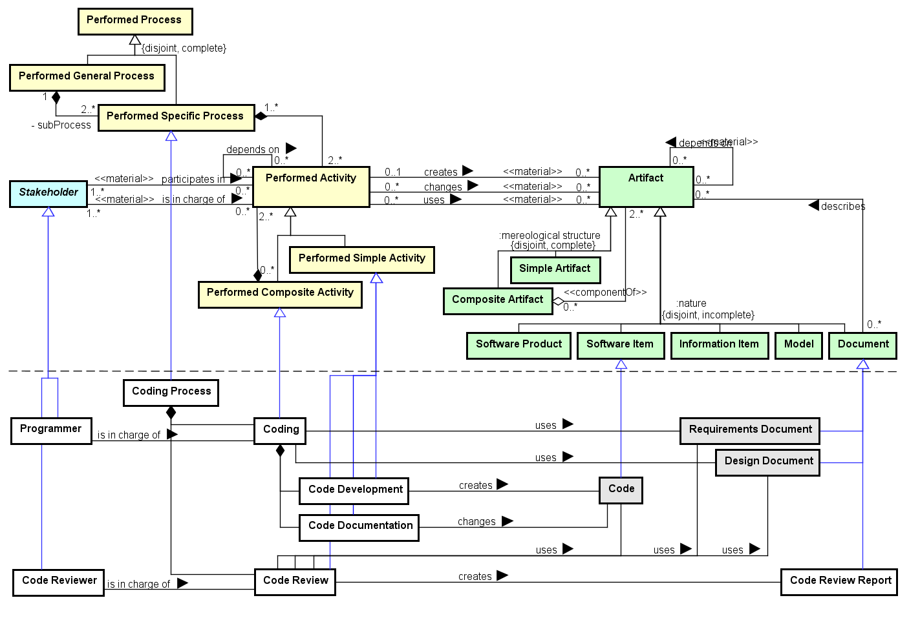

The Coding Process Ontology (CPO) aims at representing the activities, artifacts and stakeholders involved in the Coding Process, for developing a proper code for the software. Since CPO is in the core of the technical processes in software development, it reuses some concepts from other SEON networked ontologies.
Networked ontologies used by CPO:
| Ontology | Relation | Integration Level |
| SPO - Software Process Ontology | All CPO concepts extend concepts from SPO. | High |
| RSRO - Reference Software Requirements Ontology | CPO imports an artifact from RSRO. | Low |
| DPO - Design Process Ontology | CPO imports an artifact from DPO. | Low |
| SwO - Software Ontology |
Figure 1 presents the conceptual model of the CPO.

Figure 1. CPO conceptual model.
Coding Process is a Performed Process with the purpose of producing software Code in conformance with the requirements and design decisions established in the previous technical processes (requirements development and design processes). It is composed of a set of Coding activity, when the Programmer uses the requirements and definitions established in the Requirements Document and Design Document for developing and documenting the code. Code Development activity creates the software Code , while Code Documentation changes the Code by adding comments with useful information. Finally, in the Code Review activity, the Code Reviewer reviews the Code searching for errors and non-conformances and produces a Code Review Report.
The following table shows the definitions for CPO concepts.
| Concept | Definition |
| Code Development
|
Simple Performed Activity executed for developing the software Code according to previews definitions.
|
| Code Documentation
|
Simple Performed Activity executed for documenting the software Code with useful information.
|
| Code Review
|
Simple Performed Activity executed for reviewing the software Code to identify errors and non-conformances.
|
| Code Review Report
|
Document pointing out problems identified in the Code during review activities.
|
| Code Reviewer
|
Stakeholder responsible for reviewing the Code according to the Requirements Document and Design Document.
|
| Coding
|
Composite Performed Activity executed for coordinating the Code development and documentation, according to definitions from the Requirements Document and Design Document.
|
| Coding Process
|
Specific Performed Process for conducting the activities related to software Code production.
|
| Programmer
|
Stakeholder with programming skills responsible for producing and documenting the software Code.
|
<<event>>Code Development |
Code Development creates Code
Coding <>-- Code Development
<<event>>Code Documentation |
Code Documentation changes Code
Coding <>-- Code Documentation
<<event>>Code Review |
Code Review creates Code Review Report
Code Review uses Requirements Document
Code Review uses Design Document
Code Review uses Code
Code Reviewer is in charge of Code Review
Coding Process <>-- Code Review
<<subkind>>Code Review Report |
Code Review creates Code Review Report
<<role>>Code Reviewer |
Code Reviewer is in charge of Code Review
<<event>>Coding |
Coding <>-- Code Development
Coding <>-- Code Documentation
Coding uses Design Document
Coding uses Requirements Document
Coding Process <>-- Coding
Programmer is in charge of Coding
<<event>>Coding Process |
Coding Process <>-- Coding
Coding Process <>-- Code Review
<<role>>Programmer |
Programmer is in charge of Coding